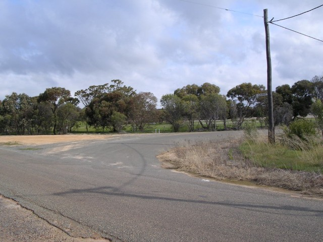
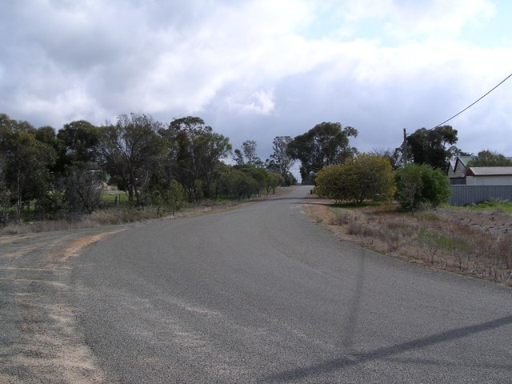
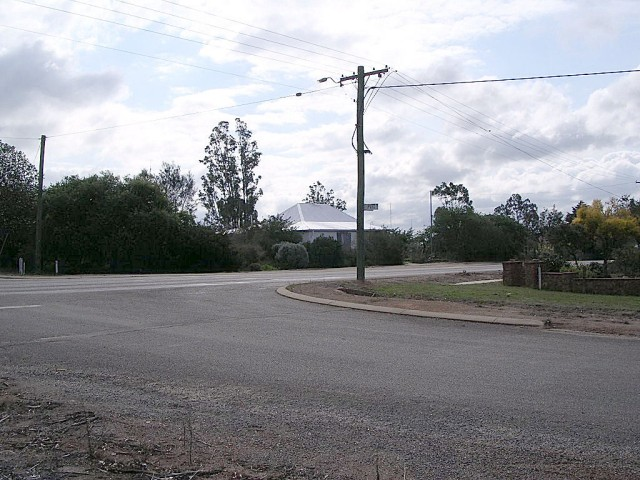
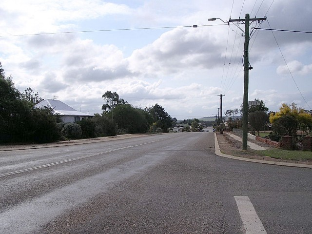
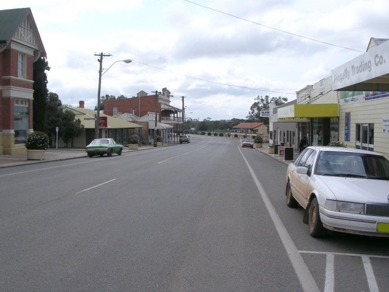
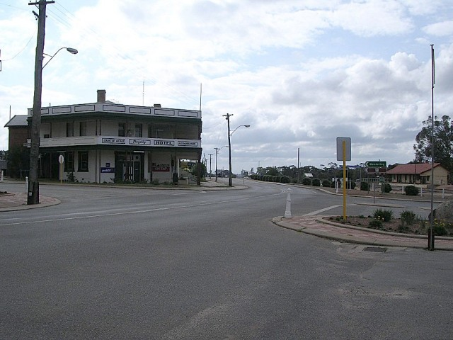

Numbers on the map represent the location where the photographs were taken. Scroll down to view the photographs.
Pingelly - Pitt St to Parade St
|| Contents || Quadrant / Review / Somerset | Park / Quadrant | Pitt / Parade || Home ||
Numbers on the map represent the location where the photographs were taken. Scroll
down to view the photographs.
Return to racingcircuits.net's Photo Archive Main Index

13 - Approaching right turn into Pitt Street.

14 - Pitt Street.

15 - Approaching right turn into Parade Street.

16 - Parade Street.

17 - Approaching last turn to the finish.

18 - Last turn to the finish.
Photographs and Text ©Neil Fackerell. Reproduced here with kind permission.